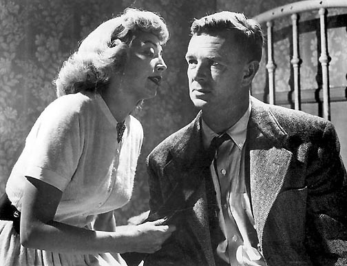
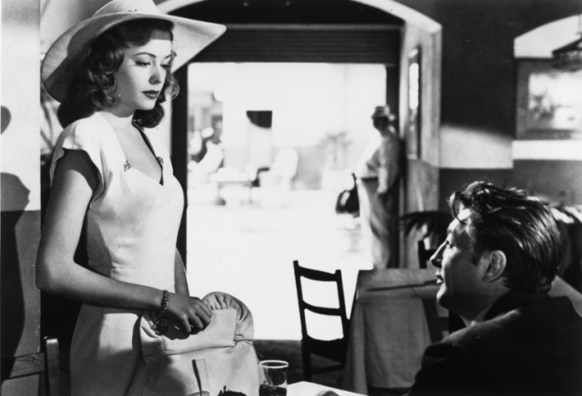
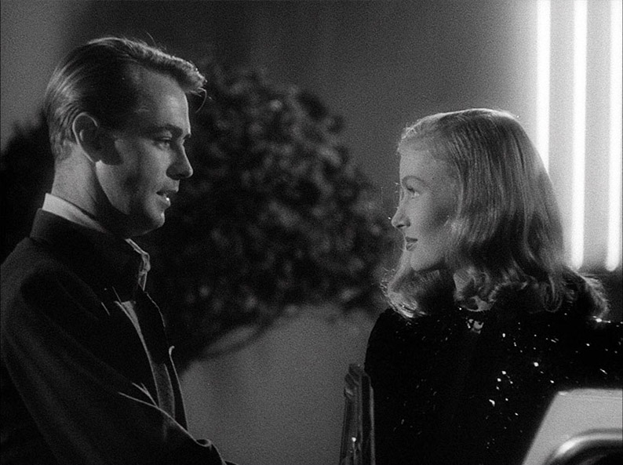
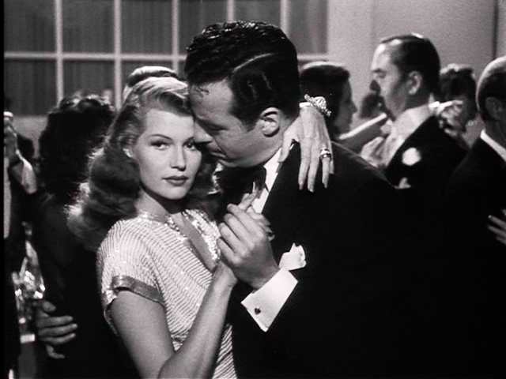

A PRIVATE DETECTIVE sits in his car in a rain-soaked black overcoat and hat. The rain pounds on the roof, loud as thunder. Three flashes of lightning come from a window of a big house on a quiet street. There's alcohol on his breath and a cigarette in his hand. He's tailed an attractive and dangerous woman to the house of a big player in a big racket.
He opens the glove compartment. There's two guns in there.
DETECTIVE (VOICE OVER)
I opened it up. I had two guns in there. One mine, the other a kid's I found dead behind a bowling alley this morning in Pasadena.
(beat)
It was a nice gun for a nice kid. Didn't look like it'd been used much. I took mine.
 "The Killing" - 1956 - Directed by Stanley Kubrick
"Out of the Past" - 1947 - Directed by Jacques Tourneur
During the Great Depression, hard-boiled crime fiction came to prominence, pioneered by author Carroll John Daly and then popularised by Raymond Chandler, Mickey Spillaine, Dashiell Hammett, James M. Cain, Dorothy B. Hughes and Charles Willieford. Their novels were charictericallly dark and cynical, containing frequent violence and sex. The protagonist is usually troubled and tragic but untimately moral and in pursuit of justice, whether they live to achieve it or not.
After the outbreak of the Second World War, these novels began to be translated into Hollywood studio films. Early examples being "Among the Living" - 1941 and "The Glass Key" - 1942. Because of the introduction of the Hays Production Code in 1934, Hollywood films were highly censored meaning many elements from the source materials were deemed too graphic and innappropriate. To counteract this, directors implemented what became an almost uniform style for these types of films to create a distinct feeling of bleakness, eroticism, paranoia, suspense and existential pessimism that couldn't always be portrayed through the language and action of the film.
Some of the key directors during this period included: Orson Welles, Fritz Lang, Billy Wilder, John Huston and Nicholas Ray. They would implement deep focus to bring everything in the scene to the foreground, making the world seem more alive and the grimy tertiary characters more sinister. They would use natural light and long shadows to create mystery and suspense, and intrusive camera angles to manifest emotions and heighten mood. These techniques and innovations were highly influential to later new wave periods of cinema as it evolved from the rigid, invisible directing methods of the past.
Because the genre became so vast and the characteristics became so clearly defined, many noirs became derirative and difficult to distinguish from others. One of the best ways of making a noir more distinct was by casting some of it's most iconic stars. These included: Humphrey Bogart, Lauren Bacall, Gloria Grahame, Glenn Ford, Veronica Lake, Robert Mitchum, Kirk Douglas, Edward G. Robinson, Burt Lancaster, Rita Hayworth and Barbara Stanwyck. The women had to be attractive, convince as a desirious, devious and tragic woman the protagonist would risk everything to get tangled up in. The men had to be tough and charming, cynical with a broken heart.
 "The Blue Dahlia" - 1946 - Directed by George Marshall
"Gilda" - 1946 - Directed by Charles Vidor